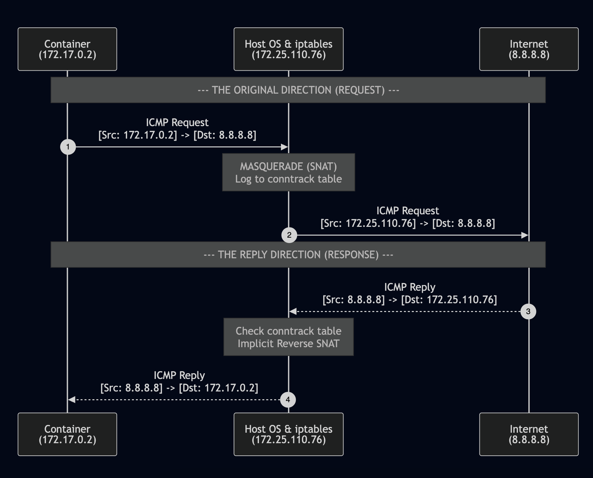

In the previous post, we explored how external requests find their way into a container via DNAT. But there is a flip side to that coin: When a container needs to download a package or call an external API, how does it "break out" to the internet when it only has a private, internal IP?
Today, we are diving deep into the fucking Egress Flow.
1. Finding the "Gateway"
Every journey begins with a door. Inside a container, that door is the damn Default Gateway. Usually, we would just exec into the container to check it, but modern official images like nginx:latest are minimal — meaning they lack common tools like ip or ifconfig binary for security and size reasons.
No worries, we can borrow the Host's ip command to take a look inside the damn container:
# Issue
root@kienlt-lab-utilities:~# docker exec nginx-demo ip route
OCI runtime exec failed: exec failed: unable to start container process: exec: "ip": executable file not found in $PATH
# 1. Get the PID of your container
PID=$(docker inspect -f '{{.State.Pid}}' nginx-demo)
# 2. Use nsenter to run the Host's 'ip route' inside the container's network namespace
nsenter -t $PID -n ip route
# Example output
default via 172.17.0.1 dev eth0
172.17.0.0/16 dev eth0 proto kernel scope link src 172.17.0.2
The gateway 172.17.0.1 is actually the IP of the docker0 interface on my host. The container sends all out-of-network packets here!
root@kienlt-lab-utilities:~# ifconfig docker0
docker0: flags=4163<UP,BROADCAST,RUNNING,MULTICAST> mtu 1500
inet 172.17.0.1 netmask 255.255.0.0 broadcast 172.17.255.255
inet6 fe80::f85b:cfff:fe9b:5087 prefixlen 64 scopeid 0x20<link>
ether fa:5b:cf:9b:50:87 txqueuelen 0 (Ethernet)
RX packets 6 bytes 168 (168.0 B)
RX errors 0 dropped 0 overruns 0 frame 0
TX packets 7 bytes 746 (746.0 B)
TX errors 0 dropped 0 overruns 0 carrier 0 collisions 0
2. IP Forwarding
Once the packet hits the Host via the veth pair, the Host Kernel acts as a router. It must decide whether to forward this packet from the virtual bridge (docker0) to the physical interface (like eth0 as a common interface name xD). This requires IP Forwarding to be enabled.
root@kienlt-lab-utilities:~# sysctl net.ipv4.ip_forward
net.ipv4.ip_forward = 1
But this is enabled by default when we install Docker I guess.
Reference: https://docs.docker.com/engine/network/firewall-iptables/#allow-forwarding-between-host-interfaces
Docker requires IP Forwarding to be enabled on the host for its default bridge network configuration
3. MASQUERADE
The container's IP (e.g., 172.17.0.2) is "non-routable" on the public internet. If you send a packet with this source IP, the internet won't know where to send the response.
To resolve that issue, Docker uses MASQUERADE (a form of Source NAT). Let's look at our nat table:
root@kienlt-lab-utilities:~# iptables -t nat -L POSTROUTING -n
Chain POSTROUTING (policy ACCEPT)
target prot opt source destination
MASQUERADE 0 -- 172.17.0.0/16 0.0.0.0/0 # This
MASQUERADE 0 -- 172.20.0.0/16 0.0.0.0/0 # This
MASQUERADE 0 -- 172.18.0.0/16 0.0.0.0/0 # This
# Hairpin NAT — a different beast entirely
# These handle the case where a container calls its own published port (src = dst).
# Docker adds these automatically when you use -p to publish a port.
MASQUERADE 6 -- 172.18.0.2 172.18.0.2 tcp dpt:80
MASQUERADE 6 -- 172.20.0.2 172.20.0.2 tcp dpt:3306
MASQUERADE 6 -- 172.17.0.2 172.17.0.2 tcp dpt:80
So let's break down rules above to understand how they work! Document of iptables
POSTROUTING(for altering packets as they are about to go out)prot= Protocol. 0 (ALL), 6(TCP)- Docker tells the Kernel: "Whenever you see a packet coming from 172.17.0.0/16 (or any other Docker subnet) heading to the outside world (0.0.0.0/0), strip its internal source IP and replace it with the Host's actual IP."
- The Kernel uses a conntrack (connection tracking) table to remember this mapping, ensuring that when the response comes back, it knows exactly which container to return it to.
- MASQUERADE is essentially a dynamic form of Source NAT (SNAT). While common SNAT requires a static IP to convert, MASQUERADE will dynamically read the IP of the NIC (network interface card) to convert.
4. Verification
How do we see this in reality instead of just reading a wall of text? tcpdump bro!
First terminal: Listen for ICMP packets on the physical interface (eth0).
root@kienlt-lab-utilities:~# tcpdump -i eth0 icmp -n
Second terminal: send a ping from inside the container.
# Nginx containers don't have a built-in shell by default, so we use nsenter
root@kienlt-lab-utilities:~# PID=$(docker inspect -f '{{.State.Pid}}' nginx-demo)
root@kienlt-lab-utilities:~# nsenter -t $PID -n ping 8.8.8.8 -c 1
PING 8.8.8.8 (8.8.8.8) 56(84) bytes of data.
64 bytes from 8.8.8.8: icmp_seq=1 ttl=112 time=24.9 ms
--- 8.8.8.8 ping statistics ---
1 packets transmitted, 1 received, 0% packet loss, time 0ms
rtt min/avg/max/mdev = 24.859/24.859/24.859/0.000 ms
Output of first terminal:
root@kienlt-lab-utilities:~# tcpdump -i eth0 icmp -n
tcpdump: verbose output suppressed, use -v[v]... for full protocol decode
listening on eth0, link-type EN10MB (Ethernet), snapshot length 262144 bytes
15:30:56.850483 IP 172.25.110.76 > 8.8.8.8: ICMP echo request, id 1, seq 1, length 64
15:30:56.875204 IP 8.8.8.8 > 172.25.110.76: ICMP echo reply, id 1, seq 1, length 64
Let's break down 2 lines
172.25.110.76 > 8.8.8.8: ICMP echo request, id 1, seq 1, length 64. This happens when the container sends a ping request to the outside world.8.8.8.8 > 172.25.110.76: ICMP echo reply, id 1, seq 1, length 64. This happens when the outside world replies to the container's ping request.
Wait, but earlier I mentioned that the Kernel uses a conntrack table to remember this mapping. How can we prove that? Let's verify it!
Because a single ping (-c 1) terminates quickly, its conntrack entry might expire before we can catch it. Let's do a continuous ping from the container instead.
# Terminal 2
root@kienlt-lab-utilities:~# nsenter -t $PID -n ifconfig
eth0: flags=4163<UP,BROADCAST,RUNNING,MULTICAST> mtu 1500
inet 172.17.0.2 netmask 255.255.0.0 broadcast 172.17.255.255
ether b6:3c:9e:1f:12:cb txqueuelen 0 (Ethernet)
RX packets 326 bytes 30416 (30.4 KB)
RX errors 0 dropped 0 overruns 0 frame 0
TX packets 306 bytes 28868 (28.8 KB)
TX errors 0 dropped 0 overruns 0 carrier 0 collisions 0
# See the IP of eth0 in container (172.17.0.2)
root@kienlt-lab-utilities:~# nsenter -t $PID -n ping 8.8.8.8
In the First terminal: you might need to install the conntrack package (apt install conntrack)
root@kienlt-lab-utilities:~# conntrack -L|grep icmp
conntrack v1.4.8 (conntrack-tools): 3 flow entries have been shown.
icmp 1 29 src=172.17.0.2 dst=8.8.8.8 type=8 code=0 id=2 packets=25 bytes=2100 src=8.8.8.8 dst=172.25.110.76 type=0 code=0 id=2 packets=25 bytes=2100 mark=0 use=1
Let's break down the output of conntrack!
- The original direction (the request):
src=172.17.0.2 dst=8.8.8.8. This shows the packet leaving the container (172.17.0.2) and heading toward8.8.8.8. - The reply direction (the expected response):
src=8.8.8.8 dst=172.25.110.76. Here is the magic! The reply packet comes from8.8.8.8back to our Host's static IP (172.25.110.76). The Kernel recognizes this as the reply to the original connection. After that, the Kernel will rewrite the destination IP from172.25.110.76->172.17.0.2before sending the packet into the container!
Here is a visual flow of the entire process (made with mermaid.live)

Conclusion
That wraps up the two-way street of Docker networking:
- Ingress (Incoming): Uses DNAT to map Ports.
- Egress (Outgoing): Uses MASQUERADE (SNAT) to map IPs.